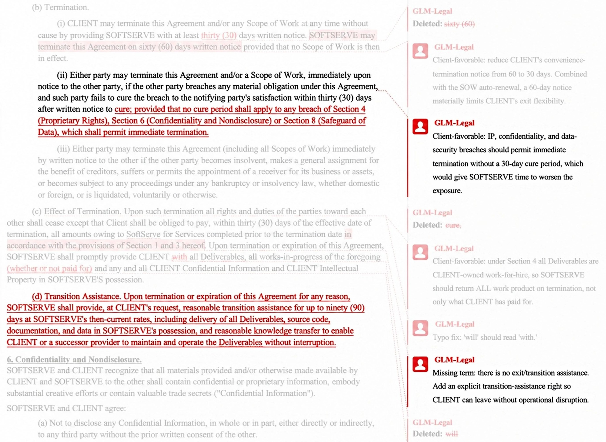
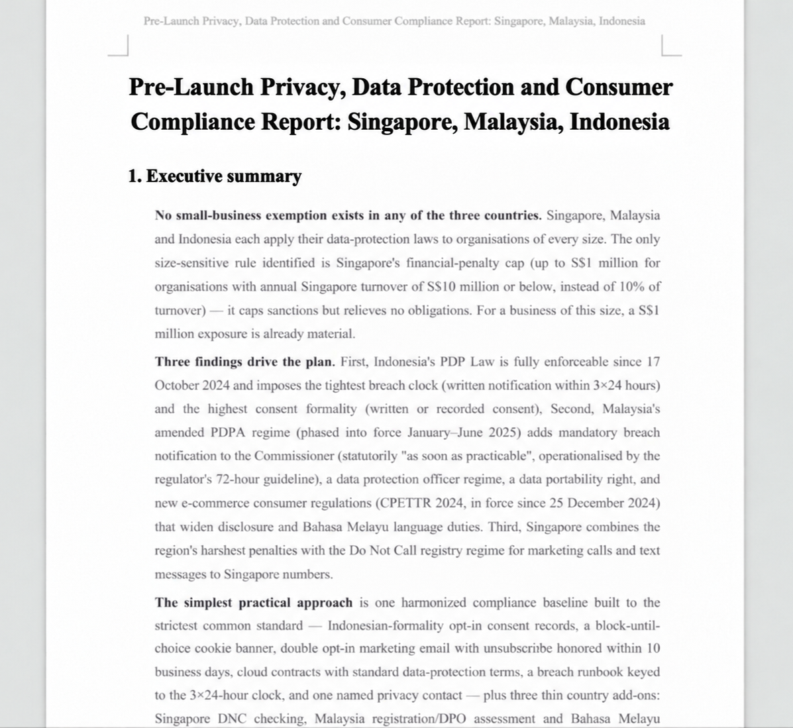

GLM-Legal

发布与定位
| 项目 | 已确认信息 |
|---|---|
| 首次公开 | 2026-10-12，Z.ai 官方 Research 博客 |
| 10 月 13 日 | AutoClaw 博客转载/产品介绍，不是第二个新模型 |
| 基座 | GLM-5.3-Flash |
| 专项任务 | 合同审阅、证据分析、合规研究及法律交付件 |
| 访问 | 博客邀请申请 API Beta；AutoClaw 接入表述为即将可用 |
| 权重 / 许可 | 未核实独立权重与许可；不自动继承基座的开放许可 |
| 参数、上下文、价格 | 博客未给出 GLM-Legal 自身的明确规格 |
解决的问题：法律知识正确，不等于法律工作完成
法律任务的难点是约束同时成立：事实不能遗漏，论证有依据，引用对应法域与事项，文件符合交付格式。一个答案可能逐句通顺，却没有处理客户真正关心的退出、交接或损失问题。模型需要把散落的合同、邮件、进度报告和事实记录组织成可核验的工作产品。
因此这里应区分三层能力：知道法律概念；把事实与规则建立有效联系；在真实工具与文件中完成符合 brief 的交付件。LegalBench 更偏领域推理，Harvey LAB 更接近第三层，不能把三个 benchmark 当作同一种能力的重复测量。
训练路线：领域中训 → 模型与 Harness 共演化 → 实务反馈
官方把中训描述为扩充高质量法律语料，建立概念、法规与解释框架。这能解释领域知识的来源方向，但不能推出具体 token 数、国家配比、数据授权方案或隐式检索机制。
后训练使用数万个真实感法律环境进行强化学习。Harness 管理任务上下文、工具集和执行反馈；模型学习计划、推进任务以及按约束生成交付件。双方迭代不是“换一个更好的 prompt”这么简单：训练暴露的失败可以指向 Harness 的材料组织或工具反馈瓶颈；Harness 修复又会改变模型看到的执行约束。
实务反馈检查四件事：关键问题与边界是否覆盖，论证与引用是否可靠，是否符合事项 brief，下游能否直接使用而不大量返工。官方提出把遗漏事实、浅层分析和格式偏差追溯到原始模型能力、上下文编排和工作流逻辑。注意：它没有公开这些信号如何被量化成 reward，更不能据此宣称采用某个具体 RL 算法。
评测：提升主要体现在整件任务完成，而非普遍胜出
下表逐项抄录官方图；不同 benchmark 的分数含义不同，不跨列取平均。
| 官方图模型 | Harvey LAB | LegalBench | PLawBench |
|---|---|---|---|
| GLM-Legal | 19.2 | 86.2 | 77.3 |
| GLM-5.3-Flash | 6.7 | 83.9 | 73.8 |
| Kimi K3 | 12.9 | 86.2 | 76.2 |
| Claude Fable 5 | 11.3 | 88.6 | 77.7 |
| GPT-6 Astra | 5.4 | 87.1 | 69.1 |
Harvey LAB 采用严格 all-pass，覆盖 24 个执业领域；19.2% 相对基座 6.7% 提升 12.5 个百分点，也意味着大多数任务仍没有通过全部要求，不能写成“法律工作已可靠自动化”。LegalBench 比基座高 2.3 分，却不是表内最高；PLawBench 比基座高 3.5 分，也略低于 Fable 5。领域后训练的收益不能被改写成每个维度都 SOTA。
博客称 Harvey LAB 与 LegalBench 由 Vals 独立评估并给出评估页。本次未完整复核其配置、任务集、工具预算与统计区间；特别是 Muse Wonder 官方使用 Harvey LAB-AA，不能与这里的 LAB 19.2 直接排榜。
三个案例怎样体现“完成工作”

合同示例中，基座给出泛泛的交接建议；Legal 将退出条件转成具体条款，并利用原合同既有的成果归属条款解释交付范围。要点是读取已有约束，再形成可编辑的 redline，而不是把“30 天”“90 天”视为任何合同都应采用的通用法律建议。这些数值只属于官方演示案例。

40 份项目争议材料的案例不仅列出对外 60% 和内部约 41% 的矛盾，还把内部预警、管理层披露决定与合同支付条款相连，形成需要进一步验证的争议理论。最重要的质量门槛是分清事实、推断和待查要件，而非让故事更有说服力。

跨境合规示例将要求组织成优先级、实施步骤和待核实国家差异。它展示交付结构，不构成对任何实际司法辖区的法律意见；生产使用必须由合格专业人员复核。
对 Agent Training 的启发
可执行的实验是固定基座、任务集、权限和预算，对比领域 SFT、领域 RL、Harness 修复以及二者组合；按遗漏关键事实率、无依据引用率、交付规范通过率与终态 all-pass 分别验收。最好保留未见过的法域与事项组合，而不是只在相似模板上验证。
来源与关联
- Tech Blog · 官方首发
- 官方所链接的 Vals 评估页
- 基座 GLM-5.3-Flash
- 原始响应和四张官方图位于本模型
src/；产品截图是案例，不是受控消融实验。
📊 相关可视化: GLM-Legal 中文 Poster
10月29日渠道更新：AutoClaw中的flashX-Legal
AutoClaw官方10/29公告称GLM-5.3-flashX-Legal已可在其产品中使用，列合同Word修订/批注、证据交叉核查和合规清单，并复述Harvey LAB all-pass19.2%、比底模高12.5个百分点。该数值与已有法律模型资料相同，本页未给出独立新checkpoint、训练改动或相对GLM-Legal的新评测。
因此暂记为现有法律family的产品可用性说明，不另造新叶子、不把10/29当新权重首发。flashX-Legal与原GLM-Legal的精确checkpoint映射仍待官方证实，不能仅凭相同分数宣称权重完全相同。来源HTML已保存为本地资料包，旧首发日期与此前评测限制保留。